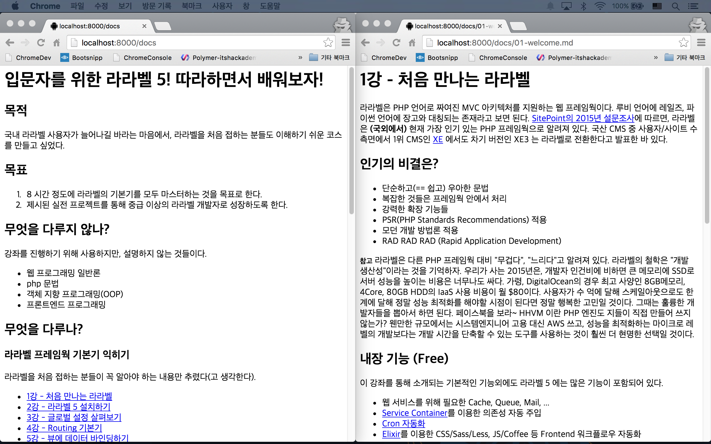
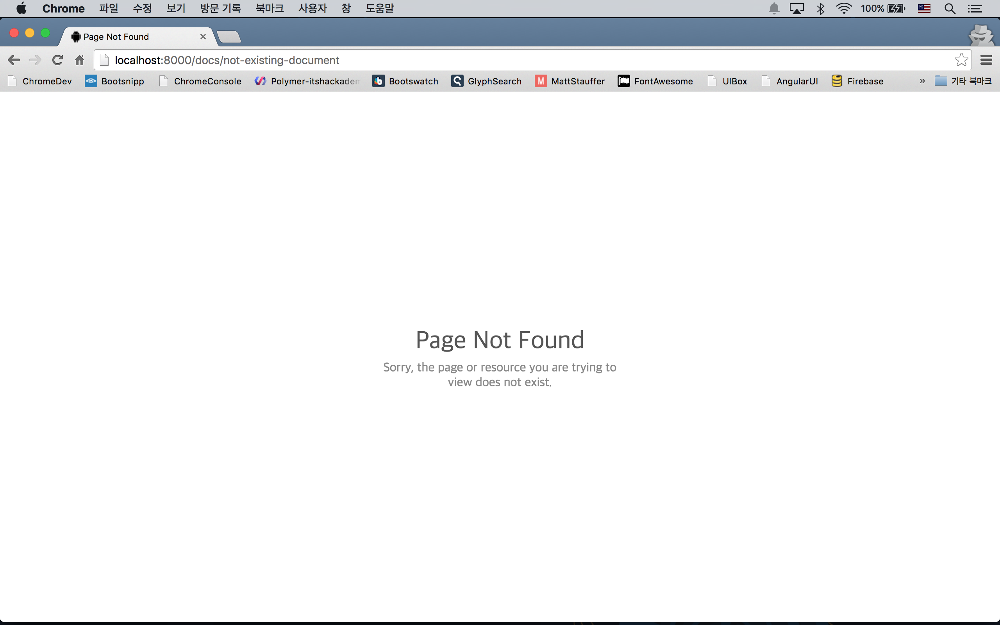

실전 프로젝트 1 - Markdown Viewer
라라벨 공식 문서와 유사하게 왼쪽 사이드바에 문서 목록, 오른쪽 본문 영역에 HTML 로 컴파일된 문서가 표시되는 헝태로 최종 목표이미지를 잡아 보자. 이 실전 프로젝트를 통해 25강까지 배운 기본기 외에 Filesystem, Custom Helper, Cache, Elixir 등을 더 사용해 보게될 것이다.
26강 - Document 모델
이 강좌의 마크다운 문서들은 docs 폴더에 위치하고 있다. 생각해 보면, DB 테이블에서 데이터를 가져오는 것이 아니라, 파일시스템에서 가져와야 한다. 파일시스템에 접근하는 방법을 알아 보자.
File vs Storage
라라벨에서 File과 Storage 2개의 Facade가 있다. 공식문서에서 File이 빠진 것으로 보아 Storage의 사용을 권장하는 것처럼 보인다. 두 Facade의 API(== public 메소드)는 거의 동일하지만, Storage는 파일 저장위치를 config/filesystems.php 에 지정해 놓으면 그 디렉토리 밖을 벗어날 수 없다. 우리의 docs 폴더는 프로젝트 루트에 위치하므로, File Facade를 이용해야 한다.
참고 put(string $path, string $contents) 파일 쓰기, files(string $directory) 파일 목록 가져오기, glob(string $pattern) 패턴에 맞는 파일 목록 가져오기, isDirectory(string $directory) 디렉토리 체크, makeDirectory(string $path, int $mode) 디렉토리 만들기 등은 실전에서 자주 사용하게 되니 사용법을 익혀 두자.
Document 모델을 만들자.
$ php artisan make:model DocumentDocument 모델은 엘로퀀트를 상속하지 않는다. 잘 생각해 보면, 컨트롤러의 기본 동작인 CRUD(Create, Read, Update, Delete) 중 Read만, 즉, 컨트롤러에서 요청한 이름에 해당하는 파일을 잘 읽어서 반환해 주는 메소드 하나만 필요하다.
<?php
namespace App;
use Illuminate\Support\Facades\File;
class Document
{
private $directory = 'docs';
public function get($file = null)
{
$file = is_null($file) ? 'index.md' : $file;
if (! File::exists($this->getPath($file))) {
abort(404, 'File not exist');
}
return File::get($this->getPath($file));
}
private function getPath($file)
{
return base_path($this->directory . DIRECTORY_SEPARATOR . $file);
}
}getPath()란 메소드를 먼저 보자. base_path()는 프로젝트 루트 디렉토리의 절대 경로를 반환하는 Helper이다. 추가 경로를 인자를 넣으면 덧붙여서 반환해 준다.
$ php artisan tinker
>>> base_path();
=> "/Users/Juwon/workspace/myProject"
>>> base_path('docs/file.ext');
=> "/Users/Juwon/workspace/myProject/docs/file.ext"참고 DIRECTORY_SEPARATOR 상수는 윈도우즈 시스템에서는 \ *nix 에서는 /를 반환한다.
File::exists(string $path) 로 인자로 넘어온 파일이 존재하지 않으면, abort() Helper로 404 NotFoundHttpException 을 던지도록 했다. if 테스트를 통과하면, 인자로 받은 마크다운 파일의 내용을 읽어서 반환한다. 인자로 넘겨 받은 $file 값이 없을 경우를 대비해, index.md 를 기본값으로 지정했다.
동작 테스트
app/Http/routes.php 에서 동작 테스트를 해 보자. 25강 - 컴포저에서 사용한 내용을 조금만 수정해서 사용할 것이다.
Route::get('docs/{file?}', function($file = null) {
$text = (new App\Document)->get($file);
return app(ParsedownExtra::class)->text($text);
});이전에 보지 못했던 'docs/{file?}' 엔드포인트가 먼저 눈에 띈다. 여기서 file을 'Route 파라미터'라고 한다. 파라미터는 중괄호로 싼다. 올드스쿨식으로 표현하자면 docs?file= 과 같다고 보면 된다. 파라미터로 받은 $file을 바로 뒤 콜백에 인자로 넘긴 것이 보일 것이다. 물음표는 file 파라미터가 있을 수도 있고 없을 수도 있다는 의미이다. 즉, docs, docs/any-text 를 모두 이 Route에서 처리한다는 의미이다.
25강에 $text 변수의 값을 Heredoc 으로 하드코드로 넣어 주었다면, 여기서는 Document 모델의 get() 메소드 요청으로 부터 받아왔다. 인스턴스 생성과 메소드 호출을 인라인으로 한 줄에 표현하기 위해 () 문법을 이용하였다.
서버를 부트업하고 테스트해 보자.

예외 처리
Document 모델에서 abort(404)를 던진 것에 대한 예외처리를 하자. 24강 - 예외 처리에서 배운 app/Exceptions/Handler.php 에다, or $e instanceof NotFoundHttpException 을 추가해 주자.
public function render($request, Exception $e)
{
if ($e instanceof ModelNotFoundException or $e instanceof NotFoundHttpException) {
return response(view('errors.notice', [
'title' => 'Page Not Found',
'description' => 'Sorry, the page or resource you are trying to view does not exist.'
]), 404);
}
return parent::render($request, $e);
}